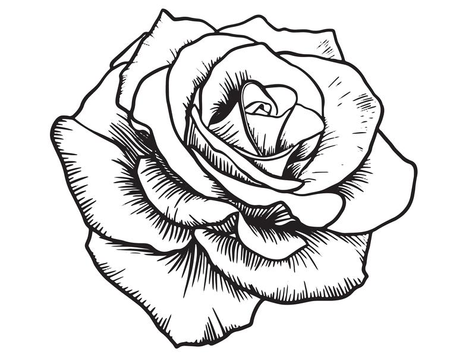

About The Rose Garden>

The International Rose Test Garden is a rose garden in Washington Park in Portland, Oregon, United States. There are over 10,000 rose bushes of approximately 650 varieties. The roses bloom from April through October with the peak coming in June, depending on the weather.[1] New rose cultivars are continually sent to the garden from many parts of the world and are evaluated on several characteristics, including disease resistance, bloom formation, color, and fragrance.[1] It is the oldest continuously operating public rose test garden in the United States and exemplifies Portland's nickname, "City of Roses". The garden draws an estimated 700,000 visitors annually.
History
In 1915 Jesse A. Currey, president of Portland's Rose Society and Sunday editor of the Oregon Journal, convinced city officials to institute a rose test garden to serve as a safe haven during World War I for hybrid roses grown in Europe. Rose lovers feared that these unique plants would be destroyed in the bombings. The Park Bureau approved the idea in 1917 and by early 1918, hybridists from England began to send roses.[3]
Originally, the garden occupied about a block, sandwiched between a playground and an elk corral.[1] A parking lot replaced the original rose garden when the garden moved to its current location in 1928. The garden later expanded in the 1950s when Washington Park's zoo moved to its current location.[5]
Features
The International Rose Test Garden covers 4.5 acres (18,000 m2) in several tiers facing downtown Portland, the Willamette River, and East Portland. On clear days, there are views of the Cascade Range, with Mount Hood featured prominently.